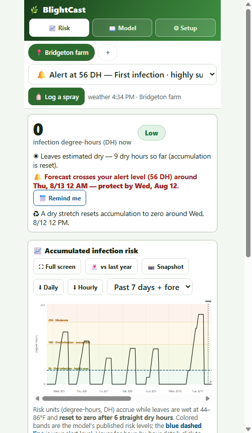
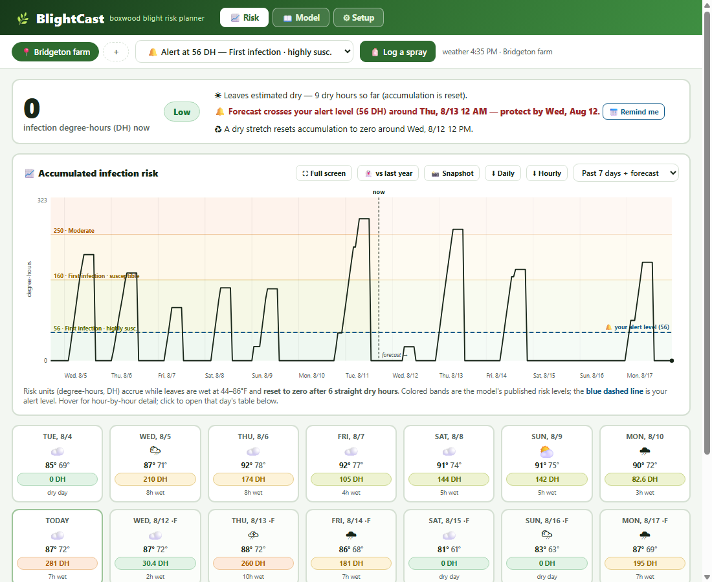

1 · Two-minute start
- Open BlightCast. You land on ⚙ Setup.
- Type your town → Search → tap it. BlightCast pulls a month of past weather plus the week ahead and runs the model on all of it — so the risk number you see is real accumulated history, not a guess from zero.
- Optionally set what grows at each location (🌱 highly susceptible / susceptible / tolerant) — it tailors the guidance lines.
- Tap 📈 Risk: the big number is where your block stands right now.

2 · How the risk number works (plain language)
BlightCast implements the USPest.org / Oregon State boxwood blight infection risk model v3.0 — the published one, unmodified. The gist:
- Boxwood blight needs wet leaves and mild temperatures at the same time. Each hour the leaves are wet, the model adds degree-hours (DH) — nothing at 43°F or below, the most (31.35 DH/hr) at 76°F, tapering to zero by 86°F.
- Six dry hours in a row reset the count to zero — the infection attempt died. That's why a rainy week is dangerous and a breezy dry day is your friend.
- Leaf wetness is estimated from rain, humidity and wind — unless a real leaf-wetness sensor is connected (see §6), which the model uses directly.
| DH reached | What the model says |
|---|---|
| 56 | First infection possible on highly susceptible varieties |
| 160 | First infection possible on susceptible varieties |
| 250 | Infection level rising (~2 lesions/plant, highly susc.) |
| 400 | Moderate-high (~10 lesions) |
| 550 | High (~18 lesions) |
3 · Reading the screen

- Status card: current DH, the band it's in, the wet/dry streak, when the next reset or threshold crossing is forecast, and whether a logged spray still protects you.
- The chart: the line is accumulated DH over the past month; colored strips are the published bands; the blue dashed line is your alert level; the shaded right edge is forecast. Tap anywhere to open that day's hour-by-hour table.
- ⛶ Full screen blows the chart up (self-rotating on phones); 👻 vs last year overlays the same weeks last season — is pressure running early or late?; 📸 Snapshot makes a shareable PNG with the verdict baked in.
- Day cards: swipe sideways — history left, forecast right. Each shows the day's peak DH and wet hours. The hour table under a day marks every wet hour, what it added, and which weather source covered that hour (🛰 NEWA / 🔌 your station / 📡 imported file / Open-Meteo).
- More than one location? A compare strip shows every farm's number side by side.
4 · Alert levels and the bell
- The dropdown in the top bar sets the alert level for the active location — a band preset or a custom DH number. Growing highly-susceptible varieties? Stay at 56. Tolerant hedge stock? You might ride to 160.
- Each location can have its own level (set per location; the shared default covers the rest).
- 🔔 Alerts (⚙ Setup): while the page is open, BlightCast chimes when any location crosses its level. For reminders that reach a closed phone, use 📅 Remind me on the status card — a calendar file with built-in reminders for the re-cover date.
5 · Logging sprays — protection windows and rain wash-off
- After a protective fungicide goes on: 🧴 Log a spray (top bar). Pick the product (save your usual ones as presets in ⚙ Setup — logging becomes two taps), the date, and how many days the label says it protects.
- The chart shades the protected window, the status card counts it down, and the re-spray planner reads the forecast to say "re-cover by Thursday" — with a 📅 reminder file if you want it.
- Rain wash-off (optional): give a product a wash-off amount (inches of rain) and cumulative rain after application shortens the protection window. Label days are always the ceiling — dry weather never stretches protection, because new growth comes on unprotected regardless.
- BlightCast records the DH count at application and nudges you (warning only) if you log the same FRAC group back-to-back.
6 · Real station data (optional)
You can skip this entirely — the built-in weather is solid. But real readings sharpen the model, and a real leaf-wetness sensor is the biggest upgrade of all (the model uses it directly instead of estimating). Three ways in, all per-location, all free:
- 🛰 Option A — link a NEWA station. If there's a station near you on NEWA (Cornell's network — includes Rutgers NJWxNet and many nursery/orchard stations, most with leaf-wetness sensors): tap 🔍 Find stations near the active location, pick one, done. Data refreshes automatically every time you open the page.
- 🔌 Option B — connect your own station's cloud. Have a LI-COR/Onset-style station with a cloud account? Paste its API token and BlightCast finds the sensors itself. Any service that serves a CSV/JSON link works too. Tokens stay in your browser and are never included in setup share-links.
- 📡 Option C — import a file. Download hourly data from your station software or a state network and drop the CSV in — a column-mapper reads almost any layout (there's an Example CSV button showing the ideal shape).
Priority when sources overlap: your file > your station's cloud > NEWA > Open-Meteo. Gaps always fall back to Open-Meteo, and hours in the tables are marked with the source that covered them.
7 · The Google-Sheet bridge
Optional, but worth the 3 minutes: every 🧴 log entry (and removals) lands as a row on a Google Sheet you own — the team sees what's been applied without opening BlightCast. The setup is identical to SprayCast's: make a Google Form with short-answer questions (Date, Product, Days, FRAC, Location, Notes, Status, DH), no Required questions, email-collection OFF, then Publish — then ⋮ → Get pre-filled link, type the marker words into the boxes, copy the link into ⚙ Setup → 📤 → Connect, and send the 🧪 test row.
8 · Backups, sharing and your phone
- 🔗 Copy a setup link — carries your locations, boxwood types and alert levels to a colleague as a plain link. Never your spray log, weather files or tokens.
- ⬇ Export backup — everything, including the spray log and imported station data. Your season's log lives only in this browser: export one after setup and now and then after.
- 📱 Phone warning: iPhone/Safari can clear a site's saved data after a week or two unopened. Backup + open occasionally + Add to Home Screen.
- Updates: a new version appears on the second full open; the footer version number is the tell.
9 · Questions people actually ask
Where does my data go? Nowhere. No account, no server. Internet requests: Open-Meteo (weather), NEWA/your station's cloud (only if you link one), the Open-Meteo archive (only if you turn on 👻 vs last year), and your own Google form (only if you connect it). Source is public.
Why does my number differ from USPest's website? Different weather inputs. USPest runs on its stations; BlightCast runs on Open-Meteo for your exact coordinates — or your own station if you link one. Same model, different thermometer.
The count reset overnight — why? Six consecutive dry hours zero the accumulation (the infection attempt failed). Check the day's hour table: you'll find the dry stretch marked "reset".
Does a spray stop the DH count? No — the model keeps scoring the weather. Protection means infections during that window shouldn't take; the chart shades protected periods so you can see risk vs. coverage together.
Can it alert me when it's closed? No — no server, no push. Use 📅 Remind me (calendar reminders) and the open-with-coffee habit.
Is this official? BlightCast implements Oregon State's published model with credit, but isn't affiliated with or endorsed by OSU or USPest. Spray decisions are yours; labels and scouting always win.